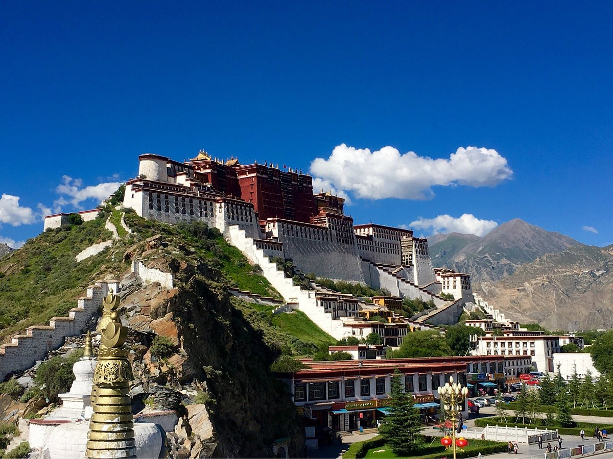
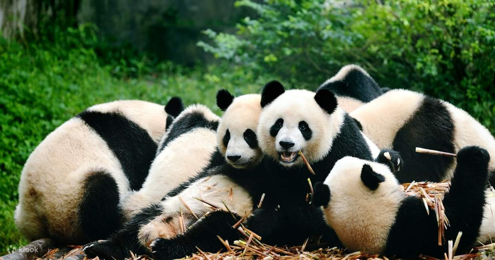
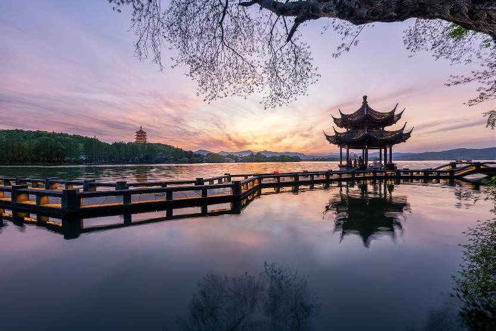

China travel

The Potala Palace, nestled atop Red Hill at an altitude of 3,700 meters, is a vast palace complex originally built by Songtsen Gampo, the king of the Tubo Dynasty. Rebuilt in the 17th century, it served as the winter residence of successive Dalai Lamas and served as the theocratic center of Tibet. The palace, with its distinct Tibetan style, is imposing and majestic, nestled against the mountainside. It houses countless treasures and is a veritable art gallery. Built into the mountainside, its towering buildings and majestic halls create a breathtaking spectacle. It is a world-renowned historical site and a masterpiece of Chinese ancient architecture. It is the world's highest ancient palace complex and the largest and most complete in Tibet. The main structure of the Potala Palace consists of the White Palace and the Red Palace. The main building, with an exterior 13 stories and an interior 9 stories, comprises sleeping quarters, a Buddhist temple, a stupa hall, and monks' quarters. Key attractions include the Pabalakhang, the White Palace Deyangsha, the Tsokchin Sixipingcuonu, the Wuzijiapi, the Qimededanji, the Duikor Lhakhang, and the Potala Palace Treasure House. The Potala Palace complex in Lhasa is a world-renowned historical site and a masterpiece of Chinese ancient architecture.


The Chengdu Panda Base is a world-renowned ex-situ conservation center for giant pandas, a research and breeding base, a popular science education center, and a cultural tourism destination, covering 3.07 square kilometers. As a "Giant Panda Ex-situ Conservation Ecological Demonstration Project," it focuses on protecting and breeding giant pandas and red pandas. Located on Futou Mountain in the northern suburbs of Chengdu, 10 kilometers from the city center, it is connected to the city by a broad Panda Avenue. The Giant Panda Museum houses invaluable materials and rich exhibits, making it an excellent place to learn about giant pandas, return to nature, enjoy sightseeing, and relax. Rare and endangered species such as giant pandas, red pandas, and black-necked cranes live and reproduce here in peace and contentment.

West Lake, located west of the Old City of Hangzhou in Zhejiang Province, China, is one of the first national key scenic spots in mainland China and one of China's top ten scenic spots. It is one of China's major scenic freshwater lakes. Bounded by Hangzhou city to the east and surrounded by mountains on the other three sides, West Lake is divided into five parts by Solitary Hill, Bai Causeway, Su Causeway, and Yanggong Causeway: Outer West Lake, Xili Lake (also known as "Hou Xihu" or "Houhu"), Beili Lake (also known as "Lin Xihu"), Xiaonan Lake (also known as "Nanhu"), and Yuehu Lake, with Outer West Lake being the largest. Gushan is the largest natural island in West Lake. Su Causeway and Bai Causeway span the lake, while three artificial islands—Xiaoyingzhou, Huxinting, and Ruan Gongdun—stand in the center of Outer West Lake. Leifeng Pagoda and Baochu Pagoda stand opposite each other across the lake, forming the basic layout of "one mountain, two pagodas, three islands, four embankments, and five lakes." West Lake was designated one of the first national key scenic spots (1982), one of China's top ten scenic spots (1985), and one of the first national 5A-level tourist attractions (2006). The Hangzhou West Lake Cultural Landscape was also inscribed on the World Heritage List.